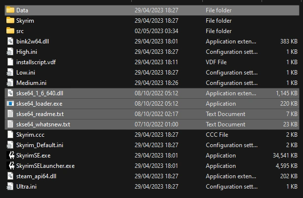

Utilities
Make sure the A Dragonborn's Fate profile is active before proceeding.
Creating a Separator in MO2
- Right-click the empty space in the left pane of MO2 and select Create Separator.
- Name the separator Utilities.
Installation instructions:
- Old Files - Skyrim Script Extender (SKSE64) 2.0.20 (manual download)
- From the downloaded archive, extract everything to the game's Root folder
If you do not know what the Root folder is, read the Key Terminology section from the Initial Setup page.
After proper install, your Root Folder should look like this:

Installation instructions:
- Main Files - All in one (Special Edition)
After installing a mod, make sure you check the box next to it in the left pane of MO2 to enable it.
Installation instructions:
- Main Files - SSE Display Tweaks
- Once the mod has been installed, double-click on it in the left pane of MO2
- In the INI-Files tab, select
SKSE/Plugins/SSEDisplayTweaks.ini - Change the following options:
- Set FramerateLimit to a value you want the game FPS to be locked to (line 204) If you set FramerateLimit to a value higher than 60:
- Set DynamicUpdateBudget to true (line 542)
- Set BudgetMaxFPS to the same value as FramerateLimit (line 561)
If you don't mind something more complex you can find a more in-depth methods to lock your FPS on this guide by Wall_SoGB.
Scaleform Translation Plus Plus
Installation instructions:
- Old Files - ScaleformTranslationPP (last file)
Installation instructions:
- Old Files - Whose Quest Is It Anyway
Installation instructions:
- Old Files - Improvement Names Customized SSE
powerofthree's Papyrus Extender
Installation instructions:
- Main Files - Papyrus Extender
- You will be prompted with a FOMOD installer, click Install
Installation instructions:
- Main Files - PapyrusUtil SE - Scripting Utility Functions
Installation instructions:
- Main Files - Spell Perk Item Distributor
- You will be prompted with a FOMOD installer, click Install
Installation instructions:
- Main Files - Keyword Item Distributor
- You will be prompted with a FOMOD installer, click Install
Installation instructions:
- Main Files - JContainers SE (first file)
Installation instructions:
- Main Files - Recursion Fix
Installation instructions:
- Main Files - Papyrus Tweaks 4.1.0
- Miscellaneous Files - INI file for reference
Installation instructions:
- Main Files - More Informative Console 1.1.0 SE
Installation instructions:
- Main Files - Multiple Floors Sandboxing